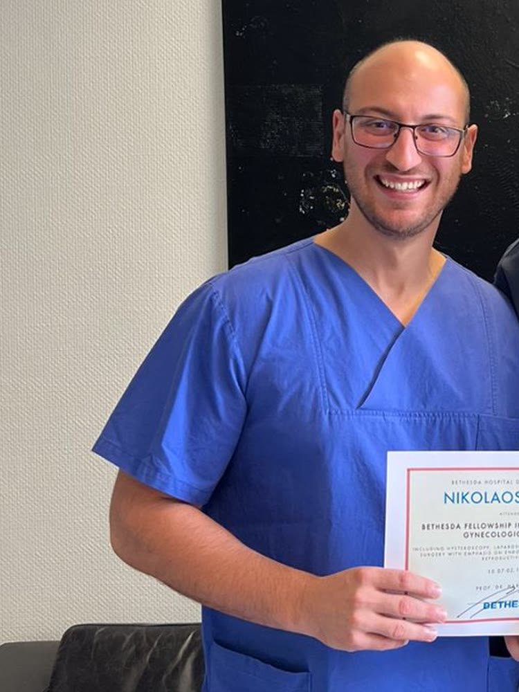

Γράμμου 3, Πολίχνη Θεσσαλονίκης 565 32
Νικόλαος Πεϊτσίδης
ΣΥΓΧΡΟΝΗ, ΤΕΚΜΗΡΙΩΜΕΝΗ ΚΑΙ ΑΝΘΡΩΠΙΝΗ ΓΥΝΑΙΚΟΛΟΓΙΑ
MD, MSc, MIGS, PhD · Μαιευτήρας Γυναικολόγος Χειρουργός. Ελάχιστα επεμβατική, ρομποτική και λαπαροσκοπική γυναικολογική χειρουργική, με μετεκπαίδευση στη Γερμανία.
- Ρομποτική Χειρουργική
- Υπογονιμότητα
- Ενδομητρίωση
- Μαστολογία
Γονιμότητα
Εξωσωματική Γονιμοποίηση
Ρομποτική Χειρουργική
Λαπαροσκοπική Χειρουργική
Υστεροσκόπηση
Διερεύνηση Υπογονιμότητας
Ενδομητρίωση
Παρακολούθηση Κύησης
Μαστολογία
Ουρογυναικολογία
Γονιμότητα
Εξωσωματική Γονιμοποίηση
Ρομποτική Χειρουργική
Λαπαροσκοπική Χειρουργική
Υστεροσκόπηση
Διερεύνηση Υπογονιμότητας
Ενδομητρίωση
Παρακολούθηση Κύησης
Μαστολογία
Ουρογυναικολογία
Ο Γιατρός
Δρ. Νικόλαος Πεϊτσίδης
Απόφοιτος και Διδάκτωρ (PhD), Ιατρική Σχολή, Αριστοτέλειο Πανεπιστήμιο Θεσσαλονίκης — βαθμός «Άριστα μετά διακρίσεως».
Μεταπτυχιακό (MSc) στη «Χειρουργική Ελάσσονος Πυέλου και Περινέου», Ιατρική Σχολή, Πανεπιστήμιο Θεσσαλίας — βαθμός 10, «Άριστα».
Δίπλωμα Μαστολογίας, Ελληνική Σχολή Μαστολογίας, μετά από επιτυχία στις τελικές εξετάσεις της σχολής.
Πλήρες βιογραφικό
Germany
Μετεκπαίδευση στη Γερμανία
Μετεκπαίδευση στη «Λαπαροσκοπική, Υστεροσκοπική, Ρομποτική και Κολπική Χειρουργική», Evangelisches Krankenhaus Bethesda Duisburg, Γερμανία.
Μετεκπαίδευση στην «Αντιμετώπιση Υπογονιμότητας και Χειρουργική Αναπαραγωγής», Evangelisches Krankenhaus Bethesda Duisburg, Γερμανία.
Προσέγγιση
Σύγχρονη και ανθρώπινη φροντίδα
Στόχος μας είναι η σύγχρονη, επιστημονικά τεκμηριωμένη και ανθρώπινη προσέγγιση, με σεβασμό στις ανάγκες και τις επιθυμίες κάθε γυναίκας.
Σε κάθε ραντεβού υπάρχει χρόνος για πλήρη εξέταση, ενημέρωση και σχεδιασμό της θεραπείας, χωρίς βιασύνη.
Αριστοτέλειο Πανεπιστήμιο Θεσσαλονίκης
Ιατρική Σχολή ΑΠΘ · Διδακτορικό
Πανεπιστήμιο Θεσσαλίας · MSc
Evangelisches Krankenhaus Bethesda · Duisburg
Ελληνική Σχολή Μαστολογίας
Χειρουργική Ελάσσονος Πυέλου & Περινέου
Αριστοτέλειο Πανεπιστήμιο Θεσσαλονίκης
Ιατρική Σχολή ΑΠΘ · Διδακτορικό
Πανεπιστήμιο Θεσσαλίας · MSc
Evangelisches Krankenhaus Bethesda · Duisburg
Ελληνική Σχολή Μαστολογίας
Χειρουργική Ελάσσονος Πυέλου & Περινέου
Το ιατρείο σε εικόνες
Χειρουργείο, ρομποτική και εκπαίδευση
Στιγμιότυπα από τη χειρουργική δραστηριότητα, τη ρομποτική χειρουργική και τη διαρκή εκπαίδευση.


100+
επεμβάσεις ως Clinical Fellow στην ελάχιστα επεμβατική γυναικολογία, Bethesda Duisburg
Δρ. Νικόλαος Πεϊτσίδης
Υπηρεσίες
18 υπηρεσίες σε τέσσερις τομείς — μαιευτική, γονιμότητα, γυναικολογία και ελάχιστα επεμβατική χειρουργική.
Παρακολούθηση κύησης
Τακτική παρακολούθηση σε όλη τη διάρκεια της εγκυμοσύνης, με προγραμματισμένες επισκέψεις, εξετάσεις και ενημέρωση για κάθε τρίμηνο.
Μαιευτικός υπερηχογραφικός έλεγχος
Υπερηχογραφικός έλεγχος της ανάπτυξης και της ευεξίας του εμβρύου, στα χρονικά σημεία που ορίζουν οι σύγχρονες κατευθυντήριες οδηγίες.
Φυσιολογικός τοκετός
Προετοιμασία και υποστήριξη για φυσιολογικό τοκετό, με αναλυτική ενημέρωση για τα στάδια και τις επιλογές σας.
Διερεύνηση υπογονιμότητας ζεύγους
Πλήρης έλεγχος και για τους δύο συντρόφους — ορμονικός έλεγχος, υπερηχογράφημα, έλεγχος σαλπίγγων και σπερμοδιάγραμμα — ώστε να βρεθεί η αιτία.
Εξωσωματική γονιμοποίηση (IVF)
Συμβουλευτική και προετοιμασία για την εξωσωματική γονιμοποίηση: επιλογή πρωτοκόλλου, προεξεταστικός έλεγχος και συνεργασία με τη μονάδα αναπαραγωγής.
Ενδομήτρια σπερματέγχυση (IUI)
Απλή, ανώδυνη τεχνική υποβοηθούμενης αναπαραγωγής: το επεξεργασμένο σπέρμα τοποθετείται στη μήτρα την ημέρα της ωορρηξίας.
Γυναικολογικός έλεγχος — Τεστ ΠΑΠ
Ο ετήσιος προληπτικός έλεγχος: κλινική εξέταση, τεστ Παπανικολάου, έλεγχος HPV και γυναικολογικό υπερηχογράφημα.
Έλεγχος και υπερηχογράφημα μαστών
Κλινική εξέταση και υπερηχογράφημα μαστών, με εκπαίδευση στην αυτοεξέταση. Δίπλωμα Μαστολογίας της Ελληνικής Σχολής Μαστολογίας.
Λαπαροσκοπική και ρομποτική χειρουργική
Επεμβάσεις με ελάχιστες τομές και ρομποτική υποστήριξη: λιγότερος πόνος, μικρότερη παραμονή στην κλινική, ταχύτερη επιστροφή στην καθημερινότητα.
Πώς λειτουργεί
Τρία βήματα για το ραντεβού σας
- 01
Επικοινωνία
Τηλεφωνικά στο +30 697 841 0100 ή με email στο nickpeits@windowslive.com.
- 02
Ραντεβού
Τρίτη, Πέμπτη, Παρασκευή 17:00–21:00 · Σάββατο 10:00–14:00. Επιλέγουμε μαζί την ώρα που σας εξυπηρετεί.
- 03
Επίσκεψη
Γράμμου 3, Πολίχνη Θεσσαλονίκης 565 32. Εξέταση, ενημέρωση και πλάνο παρακολούθησης.
Ραντεβού
Κλείστε το ραντεβού σας
Τρίτη, Πέμπτη, Παρασκευή 17:00–21:00 · Σάββατο 10:00–14:00